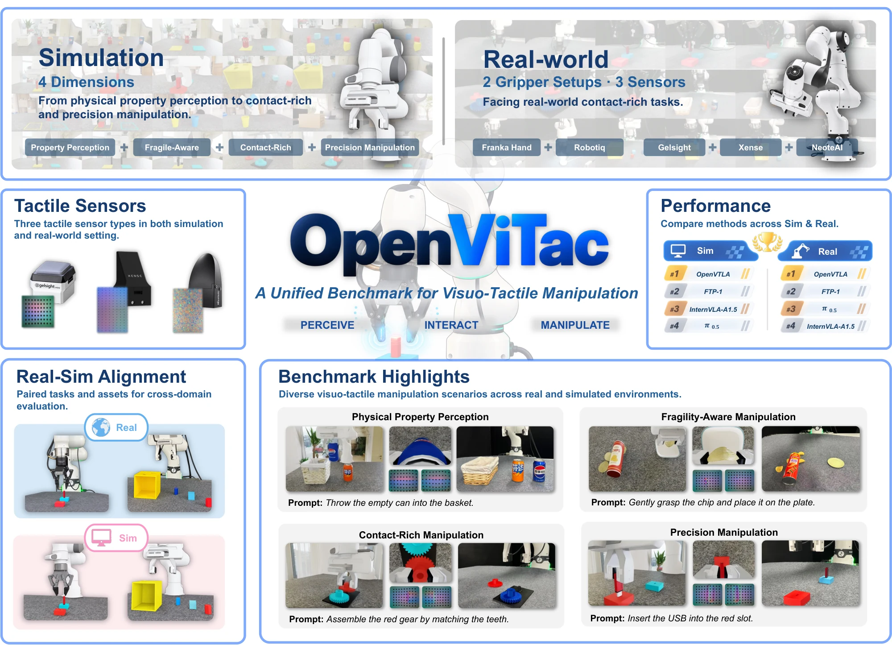
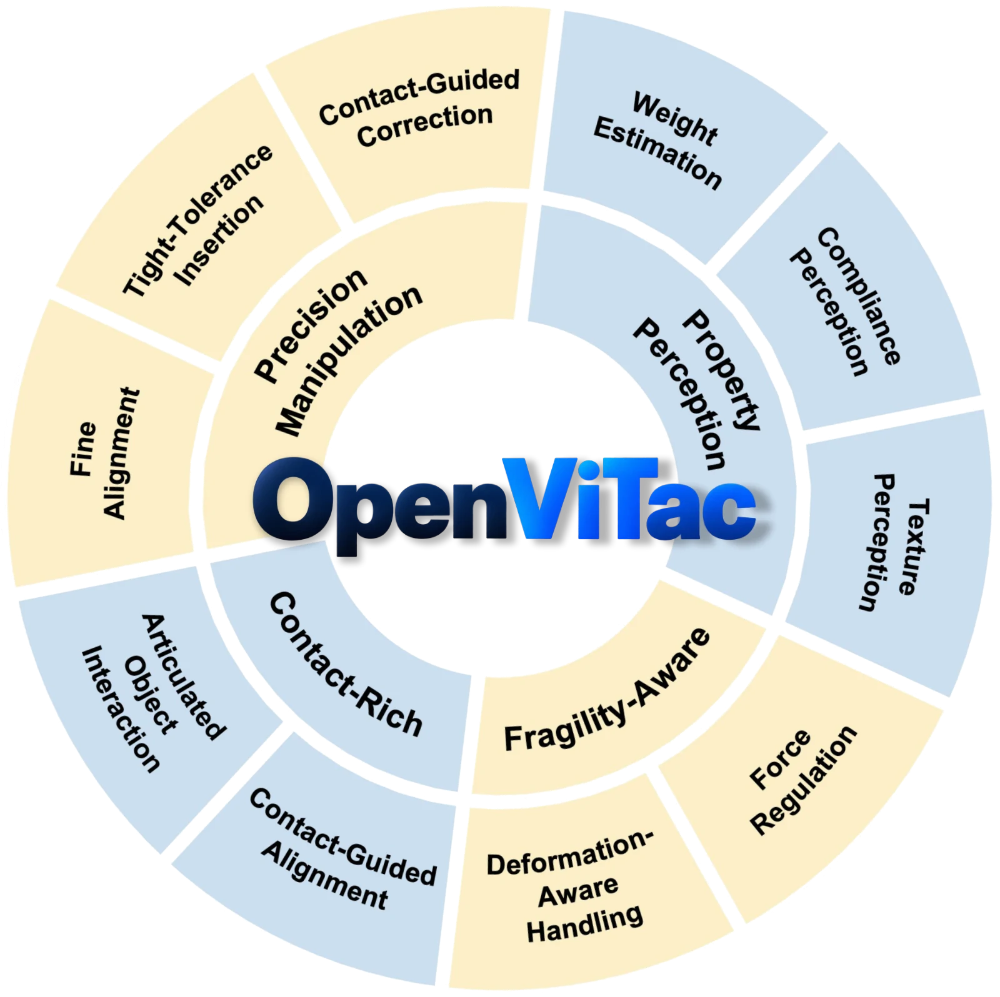
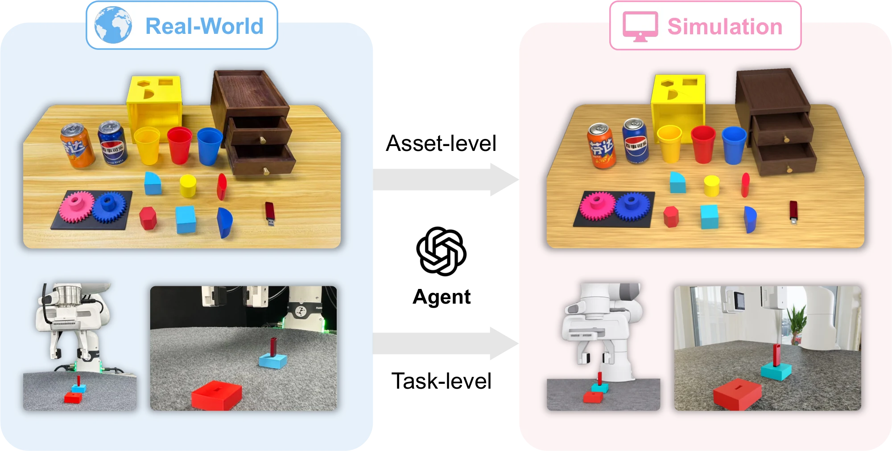
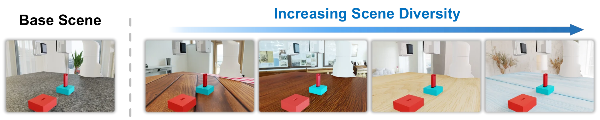

OpenViTac
Learning and Benchmarking Visuo-Tactile Policies
in a Unified Sim-and-Real Framework
* Equal contribution † Project leaders

A unified real-sim benchmark for visuo-tactile manipulation
Touch helps robots judge an object's physical properties, control their grip on fragile objects, and adjust their movements during contact. Yet understanding how much it helps is difficult when policies are tested with different tasks, sensors, and evaluation protocols. OpenViTac provides a common benchmark for studying these capabilities, with corresponding tasks in simulation and the real world. It covers physical property perception, handling fragile objects, contact-rich manipulation, and precise insertion.
Using OpenViTac, we compare robot policies and study how to add tactile feedback to pretrained vision-language-action models. We examine both how touch is represented and where it enters the policy, then combine the best-performing choices in OpenVTLA. The paired tasks also let us study how training with both simulated and real demonstrations affects performance on real robots.
Overview of the OpenViTac benchmark

(a) Capability Taxonomy

(b) Real–Sim Alignment

(c) Scene Diversity
- Simulation tasks
- 11
- Paired real-world tasks
- 8
- Tactile capabilities
- 4
- Tactile sensor types
- 3
Manipulation tasks across four tactile capabilities
OpenVTLA: adapting pretrained VLAs to touch

We study how to adapt pretrained VLAs to touch by comparing tactile representations and integration strategies on the same π0.5 backbone. Based on this study, OpenVTLA uses AnyTouch2 to encode tactile history into compact tokens and combines them with visual tokens at the VLM input. This lets the policy use tactile feedback while preserving its original vision-language and action-generation pathway.
Policy performance in simulation and the real world
Citation
@misc{wu2026openvitac,
title = {OpenViTac: Learning and Benchmarking Visuo-Tactile Policies in a Unified Sim-and-Real Framework},
author = {Wu, Yifan and Li, Qin and Min, Nan and Zhong, Guojin and Zhao, Haoyu and Li, Zhiyuan and Xu, Houze and Xu, Shengqi and Lin, Xingyao and Diao, Zijie and Liu, Zhaoxiang and Lian, Shiguo and Lu, Shunlin and Zhao, Shihao and Ye, Ziyi and Wu, Zuxuan and Jiang, Yu-Gang},
year = {2026},
eprint = {2610.10384},
archivePrefix = {arXiv},
primaryClass = {cs.RO},
url = {https://arxiv.org/abs/2610.10384}
}